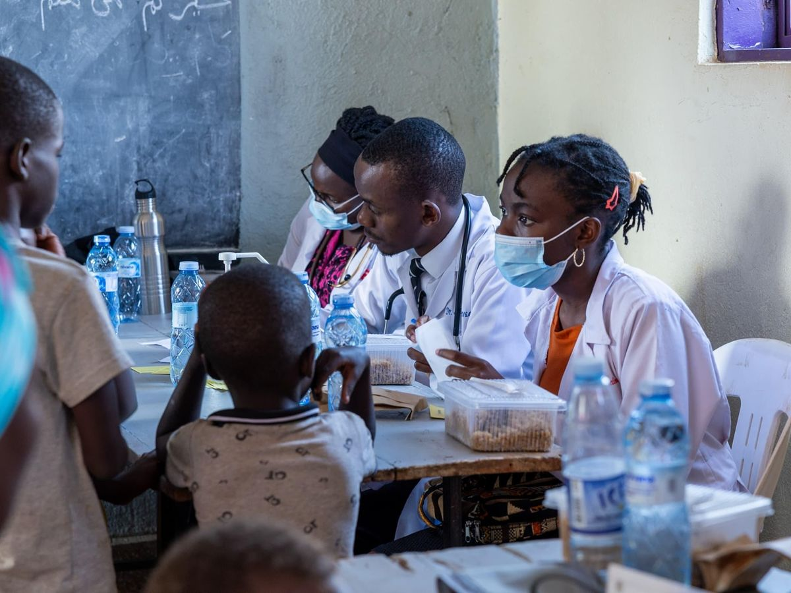
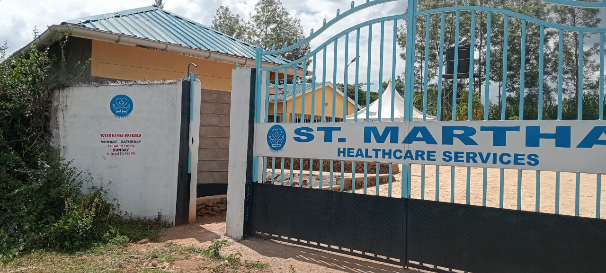
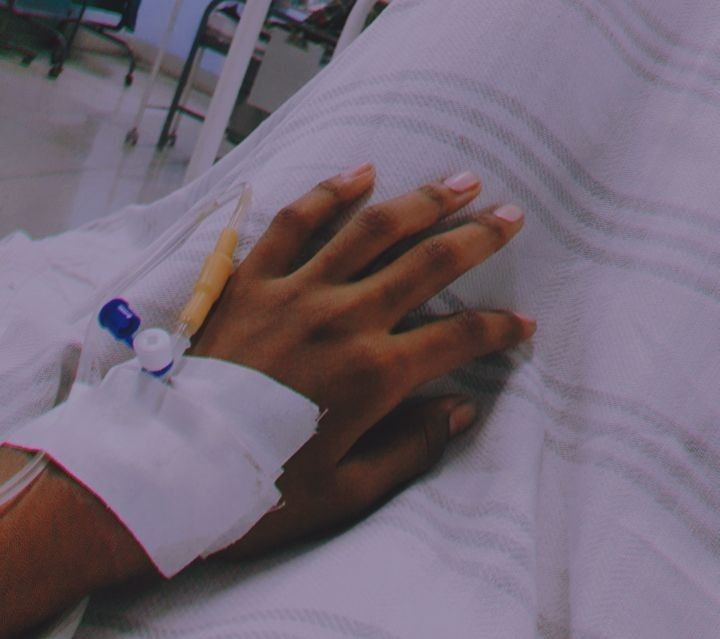
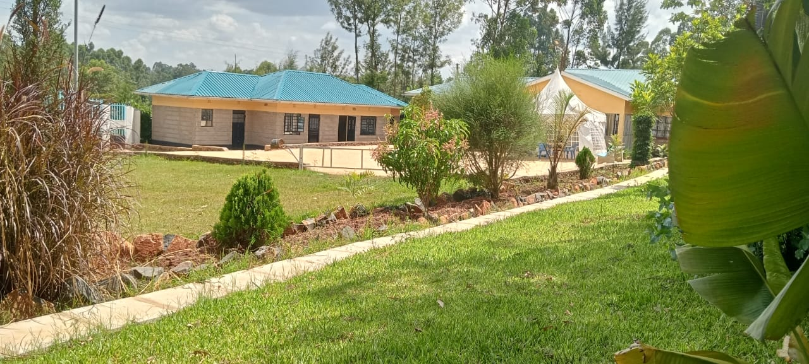

No one should have to travel far to be treated with dignity.
For years, families in rural Trans Nzoia travelled long distances in search of reliable medical care. St. Martha Hospital was founded to change that, and has served the community from Kiminini since 2023.
Founded 2023 · Kiminini, Trans Nzoia

A community-focused hospital that treats every patient with empathy, professionalism and respect.

St. Martha Kinga Na Tiba is a healthcare institution dedicated to delivering compassionate, high-quality medical care. Established in 2023, it has become a trusted name in Kiminini, Trans Nzoia, known for its commitment to patient well-being and a holistic approach to healing.
We believe healthcare is more than treatment. It is a promise of compassion, integrity and excellence. Guided by a patient-centred approach, our team combines expertise with empathy to deliver care that restores both health and hope, for people from all walks of life.
See our servicesWhere St. Martha came from

Where it all began
St. Martha Hospital was born from a calling: a heartfelt desire to transform healthcare access for communities long underserved. For years, families in rural areas faced enormous challenges travelling long distances in search of reliable medical care.
The vision for St. Martha emerged as a beacon of hope, built on the belief that no one should struggle to receive dignified, timely and compassionate healthcare.
A vision inspired by faith and humanity
The spirit behind St. Martha is rooted in compassion, faith and humanity. The founders drew inspiration from the story of St. Martha, a timeless symbol of service, care and selfless devotion.
Just as St. Martha welcomed and nurtured those around her, the hospital was built to embody those same enduring values: to serve with dedication, to provide care with empathy, and to uplift every life that crosses our path.
“I am because we are”
Built on dignity and Ubuntu
At the core of St. Martha lies one unwavering belief: every person deserves dignified, respectful and compassionate healthcare. We are more than a hospital. We are a safe haven where care is given with empathy, where healing is nurtured, and where every patient is seen, heard and valued.
Guided by the principle of Ubuntu, we recognise that the well-being of one is connected to the well-being of all.

A calm space for comfort, care and recovery
St. Martha sits in a peaceful setting in Kiminini, designed to support healing and restore hope. The quiet surroundings give patients emotional ease and the privacy to focus on recovery.
From the moment you step onto our grounds, you are welcomed into a place where medical expertise meets compassion, and where every individual feels valued, respected and safe.
Our vision and mission
Vision
Fostering holistic healing in the community through compassionate medical care.
A future where every community thrives in health and wellness.
A healthier, stronger community for all
Mission
Delivering exceptional healthcare that ensures well-being, safety and dignity for all patients.
Empowering lives with quality care and compassionate service.
Care that uplifts every individual
The values that shape how we care
For our patients, our community and each other, every day.
Compassion
We treat every patient with empathy, kindness and genuine care, listening, understanding and supporting every step of the way.
Integrity
We uphold honesty, transparency and strong ethical standards in every decision, so patients can always trust our care.
Excellence
We continuously improve to deliver the highest clinical standards and exceptional patient outcomes.
Collaboration
Teamwork with patients, families and healthcare teams strengthens trust and enhances the quality of care.
Trust
We build trust through confidentiality, reliability and respect, so patients always feel safe and supported.
Professionalism
Our team demonstrates expertise, accountability and respect at all times, upholding the highest medical standards.
Respect
We value every person’s dignity, culture, beliefs and background. Respect shapes every interaction we have.
Key milestones
-
Early 2023
Foundation & vision
St. Martha Kinga Na Tiba is conceptualised, a response to the unmet healthcare needs of communities across Trans Nzoia.
-
Mid 2023
Doors open
St. Martha officially opens its doors in Kiminini, welcoming its first patients with a team of dedicated medical professionals.
-
Late 2023
Emergency & outpatient services
Full emergency care and outpatient departments launch, significantly reducing the travel burden for local families.
-
2024
Community health programs
Expanding beyond the hospital walls, St. Martha launches outreach and community wellness programs across Trans Nzoia.
See our programs
-
2025 — Today
Growing with our community
With a growing team and expanding services, St. Martha continues its mission of dignified care for all.
Around St. Martha
At St. Martha, health is nurtured through compassion, integrity and excellence.
If you or your family need care, we would be glad to see you at our hospital in Kiminini, Trans Nzoia.
Book an appointment